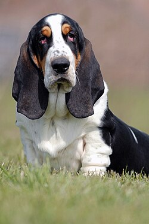

wiki linkI love Basset hounds because they are very friendly and so so cute. I love their wrinkled skin and just how chubby they are or tend to be/get. Another thing i love is their ears. I love dogs with floppy ears, it makes then 10 times cuter! Basset Hounds also come in all different kinds of colors which makes them very unique and adds to why I love them as much as I do.